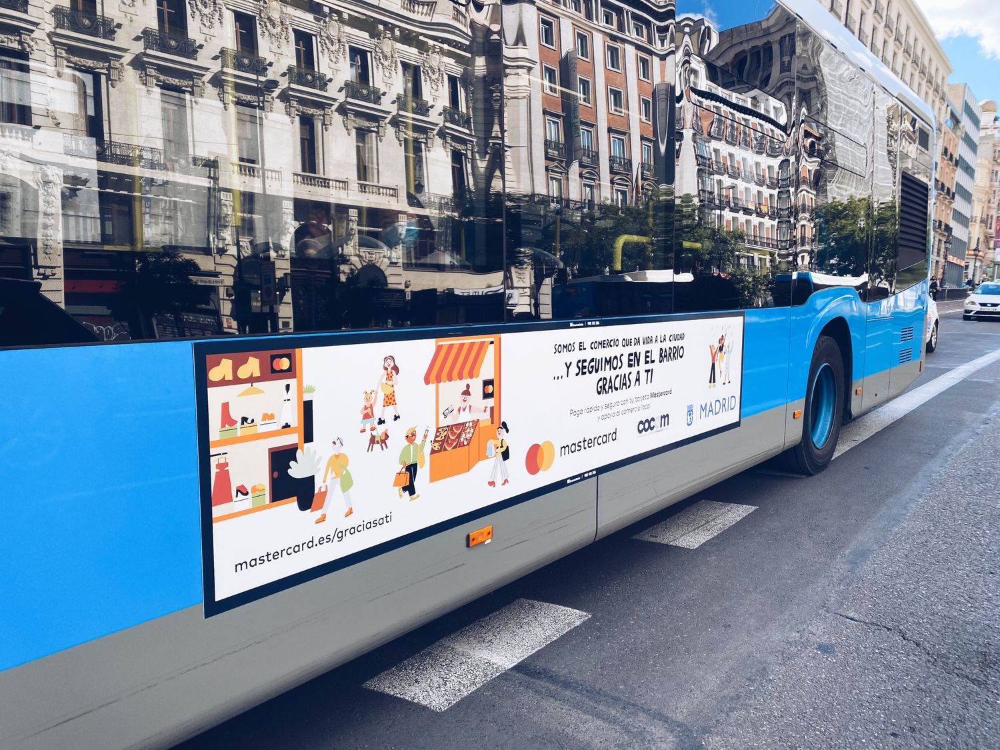

Alianza estratégica para la innovación en la salud
Esta unión persigue la suma de esfuerzos en un itinerario completo. La farmacéutica aporta sus recursos, experiencia en salud y gestión de los proyectos a través de la mentorización de los emprendedores y emprendedoras (makers) con su propio personal. Ashoka, por su parte, contribuye con su experiencia en innovación social y con su red global de emprendedores y emprendedoras. Los makers beneficiados acceden a un plan de desarrollo de su estrategia ayudados por profesionales especializados del sector a través de la plataforma Bridge for millions (B4B). Además, cuentan con la ayuda de un capital semilla de 500 euros para invertir y pueden aumentar la visibilidad de sus ideas aprovechando los canales de comunicación de ambos patrocinadores. Sesenta iniciativas de jóvenes en España han sido impulsadas estos años con Making More Health Jóvenes Changemakers. Los proyectos ganadores de la edición de 2019 se enfocaron en mejorar temas como hábitos saludables, salud mental y dolor crónico, estimulación cognitiva, estimulación sensorial para recién nacidos/as prematuros/as e información para familiares de pacientes con necesidades en salud mental. Algunos ejemplos. Cómo como school se basa en el espíritu transformador que tienen los buenos hábitos alimenticios aprendidos desde pequeños. Decedario es un juego de mesa para la estimulación cognitiva de personas con diversas patologías como alzheimer, parkinson o trastorno del espectro autista. Nido Innova es un sistema de contención y estimulación sensorial para recién nacidos/as prematuros/as. HumanITcare consiste en una plataforma inteligente para que los profesionales sanitarios puedan acceder a la información de sus pacientes. Y Perspectivamente es una herramienta digital para que las familias de niños y niñas con necesidades de apoyo para su salud mental puedan recibir ayuda e información.
La economía digital, el salvavidas del barrio
La acción, por un lado, redundó en un mayor control de los cobros en cuenta corriente de manera inmediata y mayores ventas al permitir tickets superiores, compras por impulso y aceptación de moneda extranjera. Por el otro, redujo también el contacto físico innecesario entre personas durante las transacciones, al disminuir la necesidad de pagar en efectivo. Mastercard también se unió a Volveremos si tú vuelves, una iniciativa emprendida por el consistorio madrileño en junio que invita a los ciudadanos a apostar por los comercios de proximidad a través de ofertas y descuentos. “Siempre hemos apoyado a las medianas, pequeñas y microempresas con diferentes campañas”, explica la directora general de Mastercard España, Paloma Real. “Dado el contexto actual, nos parece más importante que nunca ayudarles a sobrellevar la crisis favoreciendo su digitalización para que puedan hacer la transición al comercio electrónico”, añade Paloma Real. De esta forma, la multinacional anunció a principios de abril una aportación de 250 millones de dólares (es decir, 211 millones de euros) en apoyo financiero, tecnológico, de productos y conocimientos durante los próximos cinco años a pymes de todo el mundo. Se trata de una de entre las muchas acciones dirigidas a este tipo de empresa que Mastercard promueve a nivel global, en el marco de su compromiso de conectar a mil millones de personas y a 50 millones de pequeñas empresas a la economía digital para 2025.

Joe Biden y el futuro de las sanciones
Con la noticia divulgada este lunes de la nominación oficial de la expresidenta de la Reserva Federal Janet Yellen como futura secretaria del Tesoro de Estados Unidos, el equipo del presidente electo, Joe Biden, comienza a delinear con claridad la configuración de su futuro equipo económico. El próximo gobierno estadounidense tendrá numerosos retos a los cuales hacer frente en esta área, empezando por enrumbar al país hacia la recuperación económica de la severa crisis causada por la pandemia de coronavirus, pero también enfrentará muchos desafíos fronteras afuera, en las relaciones comerciales. "En su intento de poner a 'Estados Unidos primero' -en términos de empleos y ganancias- el presidente Donald Trump aplicó impuestos a las importaciones procedentes de aquellas naciones que juzgó que intentaban darles a sus productores una ventaja injusta, con pocos beneficios discernibles para EE.UU.", señala Dharshini David, corresponsal de la BBC para temas de comercio global.